三浦の秋冬・冬のダイビング海の季節は、終わらない。
寒くなってきたら、ダイビングはおしまい？
三浦の海は、陸よりずっとゆっくり冷えていきます。データと実写でつくった、62秒の映像です。
ナレーションと音楽はAIで生成しています。数字は気象庁の平年値と、三浦 海の学校の記録・感覚です。字幕（CC）もあります。
10月上旬から、海は昼間の気温よりあたたかい。
陸は日が落ちるとすぐに冷えますが、海は大きな熱のかたまりなので、季節の変わり方がゆっくりです。気象庁の平年値で比べると、三浦の1日の最高気温が相模湾の海面水温を下まわるのは、10月5日ごろから4月1日ごろまで。秋から春のあいだ、海の中には、陸より遅れて冬がやってきます。
| 月 | 海面水温（相模湾） | 最高気温（三浦） | 平均気温（三浦） |
|---|---|---|---|
| 9月 | 25.5 | 27.4 | 23.5 |
| 10月 | 23.1 | 22.1 | 18.5 |
| 11月 | 20.8 | 17.4 | 13.7 |
| 12月 | 18.4 | 13.0 | 9.2 |
| 1月 | 16.4 | 10.6 | 6.6 |
| 2月 | 15.4 | 11.2 | 7.0 |
| 3月 | 15.7 | 14.1 | 9.9 |
| 4月 | 17.0 | 18.5 | 14.3 |
城ヶ島・宮川湾の水温は、冬は12℃くらいまで下がる日もあります（当店の目安）。平年値はあくまで平均で、毎日の水温は海況によってちがいます。
冬は、海がいちばん青くなる。
夏から秋の三浦の海は、緑がかって見える日が多い季節です。水温が下がる冬は、水が澄んでくる季節。透明度は11〜12月ごろから上がりはじめ、1〜2月がいちばん。9月のダイビングの記録では見える距離が6〜10mほどでしたが、冬のよく見える日は20〜25mほど先まで見えることがあります。
透明度は当店の感覚です。海況によって毎日ちがいます。
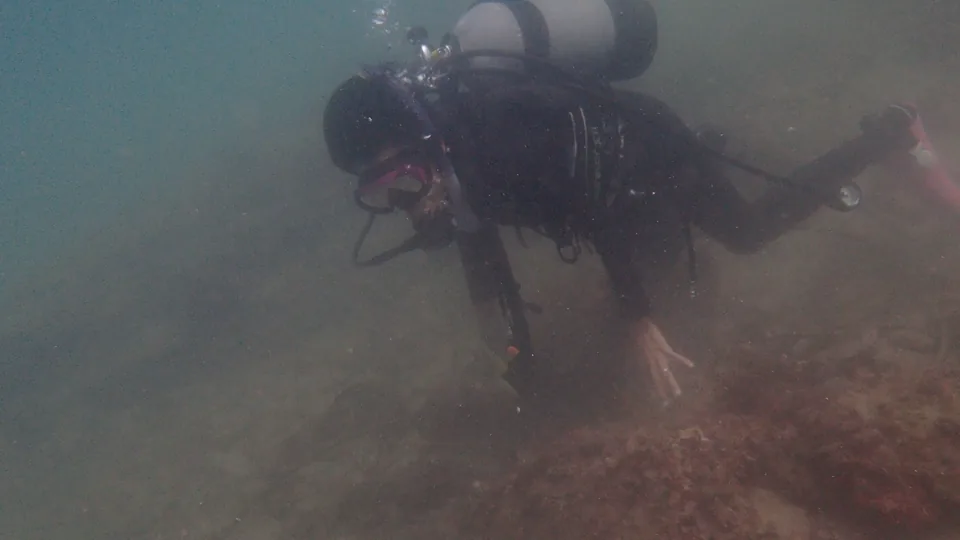
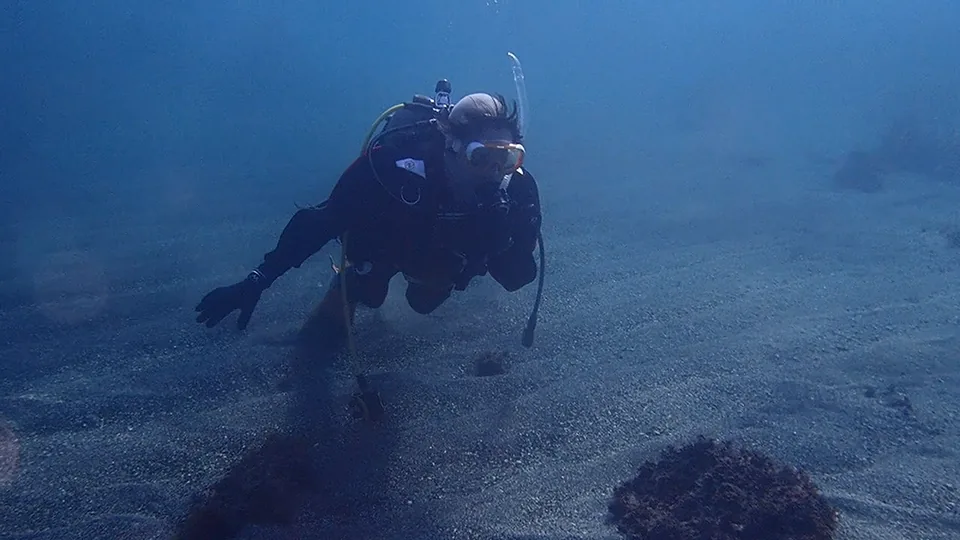
どちらも、三浦 海の学校のカメラで撮った実写です。
季節ごとに、会える生き物が変わる。
三浦の海は、季節で顔ぶれが入れかわります。夏の終わりから秋は、南から流れてくる魚たち。冬から春は、ウミウシの季節です。
南からの魚たち（季節来遊魚）
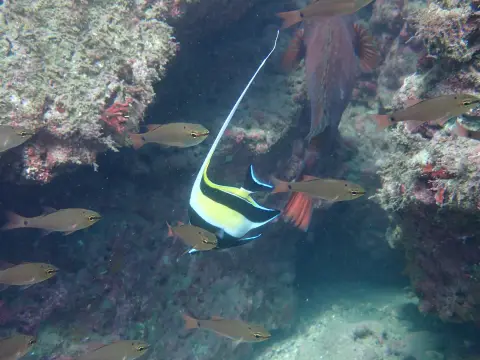
ツノダシ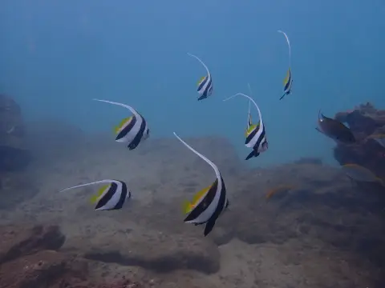
ムレハタタテダイ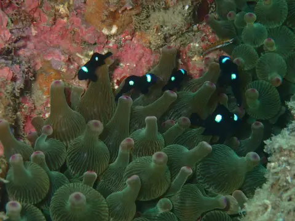
ミツボシクロスズメダイ（幼魚）
ウミウシの季節
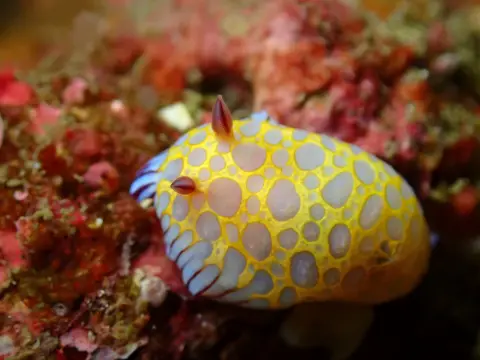
ボブサンウミウシ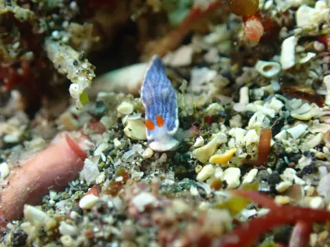
サメジマオトメウミウシ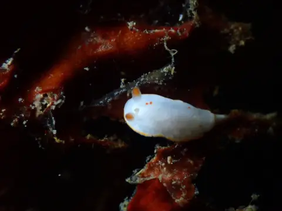
シラユキウミウシ
こんな出会いも
ダンゴウオは2〜4月ごろに見られることがあります。
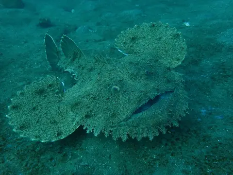
キアンコウ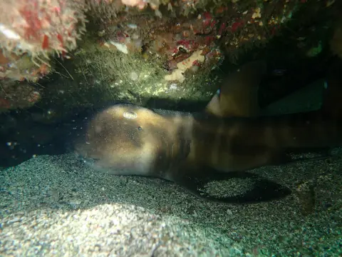
ネコザメ
日付は撮影日です。季節は当店の感覚で、野生の生き物なので会えない日もあります。ほかの生き物は海の生き物図鑑へ。
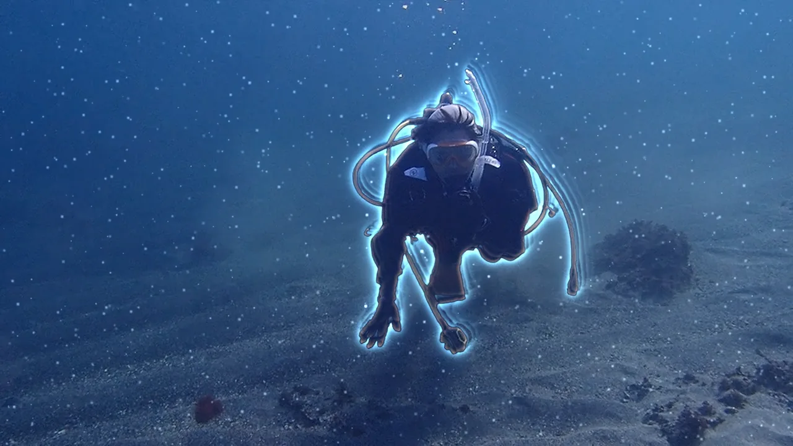
冬は、ドライスーツで。
ドライスーツは、首と手首で水を止めて、中の空気の層で体温を保つスーツです。服を着たまま潜れます（顔と手は水にふれます）。
- ドライスーツで潜る季節10月中旬〜6月中旬（当店の運用・年によって前後します）。ウェットスーツで潜るのは10月の初めごろまでです。
- レンタルドライスーツ ¥5,500（1日・税込）。サイズはご予約のときにご相談ください。
- はじめてドライスーツを着る方へPADIドライスーツ・ダイバー スペシャルティ ¥27,500（税込）で、着方や浮力の取り方から練習できます。
- 自分のドライスーツを作りたい方へ採寸して、メーカーさんでオーダーで作ります。値段や間に合う時期は公式LINEでお問い合わせください。ご注文の特典はマイドライ割のページへ。
寒さの感じ方には個人差があります。インナーの選び方や当日の過ごし方も、ご予約のときにご相談ください。
秋冬のファンダイビング
Cカード（ライセンス）をお持ちの方向けの、ガイド付きダイビングです。インストラクター1名あたり最大4名の少人数制。ブランクがある方は、基本の確認から入るリフレッシュからどうぞ。
税込・レンタル器材代は別です。潜った当日に次回の日付を決めると、次回のダイビングが¥800引きになる「つづける割」もあります。


秋冬のダイビング、よくある質問
冬でもダイビングはできますか？
できます。三浦 海の学校では、冬のあいだもドライスーツでファンダイビングをしています。海況が悪い日は、安全を優先して中止することがあります。
冬の海は寒くないですか？
水温は下がります。相模湾の海面水温の平年値は2月下旬に15℃台まで下がり、城ヶ島・宮川湾では12℃くらいまで下がる日もあります（当店の目安）。ドライスーツなら服を着たまま潜れますが、顔と手は水にふれますし、寒さの感じ方には個人差があります。インナーの選び方などは、ご予約のときにご相談ください。
いつからドライスーツになりますか？
ウェットスーツで潜るのは10月の初めごろまでで、10月中旬〜6月中旬はドライスーツで潜っています（当店の運用・年によって前後します）。
ドライスーツを持っていなくても潜れますか？
レンタルがあります（ドライスーツ¥5,500／1日・税込）。サイズはご予約のときにご相談ください。
ドライスーツを着たことがありません。
ウェットスーツとは浮力の取り方が変わります。はじめての方は、PADIドライスーツ・ダイバー スペシャルティ（¥27,500・税込）で、着方や浮力の取り方から練習できます。
冬の透明度はどのくらいですか？
11〜12月ごろから上がりはじめ、1〜2月がいちばんです。よく見える日は20〜25mほど先まで見えることがあります（当店の感覚・日によってちがいます）。
どこで潜りますか？
神奈川県三浦市の城ヶ島・宮川湾です。集合場所はご予約のときにご案内します。京急三崎口駅から開催地まで無料送迎があります（要予約）。
映像のナレーション（書き起こし）
- 寒くなってきたら、ダイビングは、おしまい？
- 陸は、すぐに冷える。でも海は、ゆっくり冷えていく。
- 10月。海は、昼間の空気より、あたたかくなる。
- そして冬。海は、いちばん青くなる。
- 秋は、南からの魚たち。冬から春は、ウミウシの季節。
- ドライスーツなら、服を着たまま、潜れる。
- 海の季節は、終わらない。
- 三浦 海の学校。